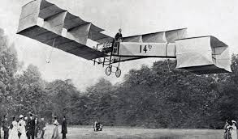
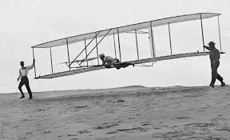

A Engenharia Aeronáutica é a área responsável pelo estudo, projeto, fabricação, gerenciamento e manutenção de veículos aeroespaciais e sistemas relacionados a eles. A tecnologia aeronáutica utiliza conhecimentos de outras ciências como a Aviônica e a Mecânica.
Apesar da maioria das pessoas discutirem a criação do avião como se fosse de um único criador, mas a criação e desenvolvimento do avião teve participação de várias pessoas no início e meio do século XX, os principais protótipos são:

Foi o primeiro avião a voar sem auxilio de lançadores ou catapultas, no dia 23 de Outubro de 1906, em Paris. A aeronave percorreu cerca de 60 metros e aterrissou por meios próprios, sendo reconhecida pela Federação Aeronáutica Internacional como o primeiro voo autônomo.
Alberto Santos Dumont morreu por suicídio em 23 de julho de 1932, aos 59 anos, no Grand Hotel La Plage, no Guarujá (SP).
Saiba mais sobre Santos Dumont
alt="O avião Wright Flyer, criado pelos irmãos wright" width="400px">Wilbur e Orville Wright foram pioneiros americanos da aviação, reconhecidos por realizar o primeiro voo controlado, autopropulsado e mais pesado que o ar em 17 de dezembro de 1903, em Kitty Hawk, Carolina do Norte. , voou com Orville aos comandos por 12 segundos, percorrendo 37 metros. A decolagem utilizou um trilho de madeira de 18 metros como pista, e o avião necessitava de ventos fortes ou mecanismos de impulso para decolar.
Wilbur Wright morreu de febre tifoide em 30 de maio de 1912, aos 45 anos, em sua casa em Dayton, Ohio. Orville Wright faleceu décadas depois, em 30 de janeiro de 1948, aos 76 anos, vítima de um ataque cardíaco.
Saiba mais sobre os Irmãos WrightExistiram outros criadores, mas a maioria criou aeronaves não tripuladas, e sem controle, por isso, seus protótipos não entram como aviões.
Saiba mais sobre a AviaçãoNota: Você pode clicar nas imagens das aeronaves para saber mais sobre elas.